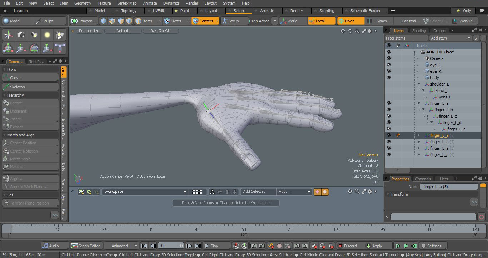
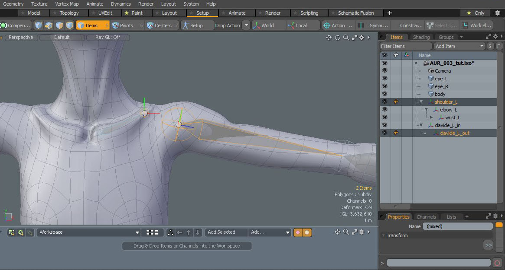

- Yonseo Rigging Kit for Modo
Projectfiles: project/lesson2/YON_lesson2.lxo
Basics of Bones
1) Making the Arm.
Lets jump over to the Setup Tab. Change your view to the front view and click on the skeleton button to create a bone.
In the tools properties you can change to edit the bone, insert, add or delete. Were going to insert a bone.
Click on shoulder joint to activate the insert. This will insert a joint to the center of our skeleton arm.
Now we
can reposition our joints. Before we can do this we have to switch over to 'edit' in the tools properties.
Switch over to 'edit' mode to move each individual joint.
Tip:
If you drop the skeleton tool you can no longer use 'add', 'edit', 'insert', 'delete' to move a joint. You must activate the 'skeleton' tool to use these options.
We will cover more about moving and positioning joints in
Lesson #3
Drop the skeleton tool by pressing space key. Now lets rename our joints. On the right panel rename
the skeleton arm to 'shoulder_L' , 'elbow_L' and 'wrist_L'. This will let us know the bones name and side. We want to stay organized since we will create more bones.
2) Finger Skeleton
Now make a finger skeleton placing each joint where the finger bends. It is easier to do this in the top view.
You can switch over to perspective and check that your bones are inside the mesh. You don't want any joint
to stick out from the mesh, this can create problems when we try to bind our model.
I've created a finger skeleton and renamed the joints with "finger_L_a" with the last letter in alphabetical order.
In the top view I will duplicate the finger skeleton to make the other fingers. You can do this by selecting the bone and pressing "ctrl + d"
on the keyboard.
When rotating or moving the skeleton it will affect all child bones. To move each joint individually simply select the desired
joint and click on "centers" mode at the top. Then select the joint once more, it will turn yellow. Now you can rotate or move this joint
without affecting the rest.

When positioning the thumb make sure to rotate the finger skeleton to follow the thumbs angle.
Now we can rename all finger joints to Thumb, index, middle, ring, pinky.
3) Parenting
We need to parent the fingers to the wrist, to do this select all fingers at the root. Now "ctrl + select" the wrist joint and press 'p'.
This will parent the fingers to the wrist. The last joint selected will be the parent.
Tip:
Another way to parent is by draging and dropping our
selected bones in our hierachy on top of our parent bone. You can UNparent a bone by pressing 'shift + P'.
If we hide our model we can see our skeleton. Notice how the lines are connected to the finger bones. There will be one
line that appears as a bone. This is fine.
4) Clavicle
Let's create a clavicle. Rename the inside joint of the claivcle to 'clavicle_L_in' and the outside joint of the clavicle to 'clavicle_L_out'.
Again we select our shoulder joint first then ctr+select our clavicle bone 'clavicle_L_out' and parent by pressing 'p'.

Hide your model to see the skeleton or click the eye icon under your model group.
Our final arm skeleton. Your hierachy should look similar to this. You can use any naming convention to stay organized.
You have now created your first arm skeleton!
In the next lesson we will create the spine and legs. Afterwards we will mirror to create the right side of the skeleton.